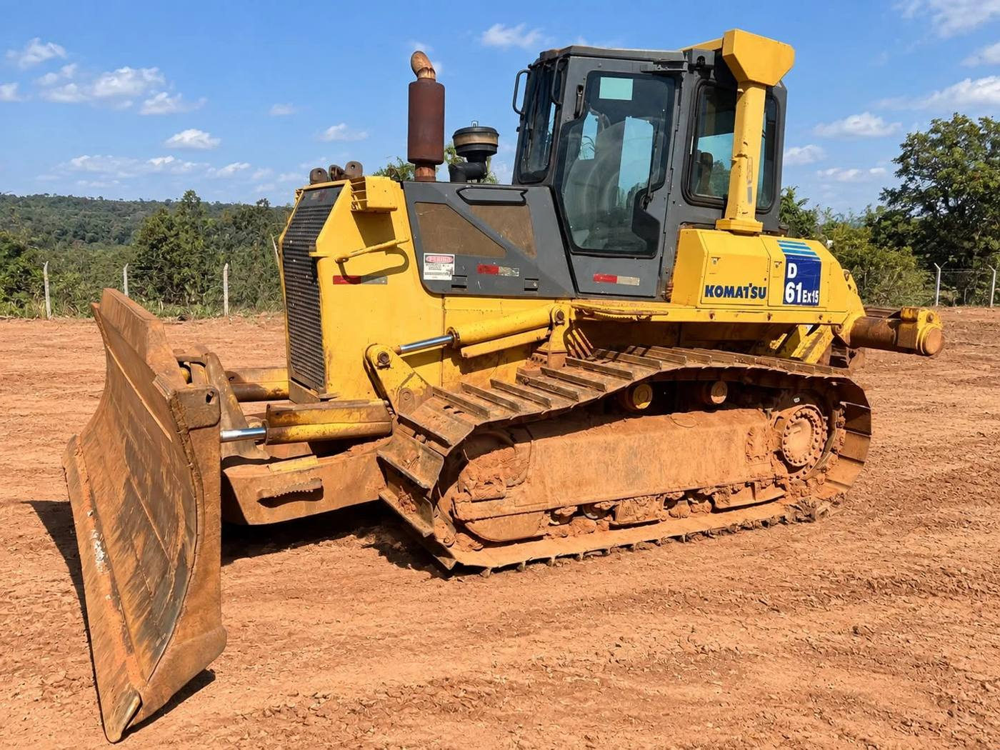

Equipamento para
o seu projeto.
Conte à equipe o serviço, a cidade e o período para consultar uma solução de locação.
Solicitar cotaçãoMARCAS NO CATÁLOGO
GOULLART PESADOS
Máquinas, peças e soluções para quem constrói, produz e movimenta o Brasil.
Compra e venda Peças Locação


ENCONTRE SEU EQUIPAMENTO
Explore o catálogo e consulte as condições
diretamente com nossa equipe.
Carregando máquinas…
Disponibilidade, estado e condições de cada equipamento devem ser confirmados antes da negociação.
GOULLART PEÇAS
Roletes, rodas-guia, componentes e outras referências para linha amarela. Pesquise pelo código ou modelo da sua máquina.
Consultar peçasALÉM DAS MÁQUINAS
Conte à equipe o serviço, a cidade e o período para consultar uma solução de locação.
Solicitar cotaçãoConsulte transporte e logística de máquinas com uma cotação para a sua operação.
Cotar transporteAtendimento para licitações e conexões internacionais da GOULLART Texas, em desenvolvimento.
Conversar com a equipeVEJA DE PERTO
Escolha uma máquina e confirme com a equipe a localização da unidade e a disponibilidade para visita.
A GOULLART
Conectamos equipamentos e oportunidades para quem trabalha na construção, no campo e na mineração.
Compra e venda de máquinas, peças, locação e intermediação com atendimento direto, atenção à sua necessidade e clareza em cada negociação.
Conheça nossa equipeVAMOS CONVERSAR
Conte o que você precisa. A equipe GOULLART ajuda você a encontrar o caminho.
ANTES DO SEU PRÓXIMO NEGÓCIO
As condições de garantia dependem de cada equipamento e devem constar na proposta. Consulte a equipe sobre os termos aplicáveis à máquina que você escolheu.
O transporte é combinado conforme a localização da máquina e o destino. Solicite uma cotação de frete e confirme prazo, seguro e responsabilidade pelo transporte antes de fechar.
Consulte as formas de pagamento disponíveis para o equipamento escolhido. Entrada, parcelas, eventual troca e demais condições dependem da negociação e da aprovação na proposta.
A disponibilidade do histórico varia por máquina. Solicite os registros, notas e informações de manutenção disponíveis para a unidade do seu interesse.
A condição de revisão deve ser confirmada para cada equipamento. Peça informações sobre os serviços realizados e os itens que precisam de atenção antes da compra.
Solicite o agendamento de uma visita e, se desejar, leve um técnico de sua confiança. Local, data e possibilidade de inspeção precisam ser confirmados com a equipe.
Consulte a possibilidade de financiamento para a máquina escolhida. A contratação depende de análise de crédito, documentação, elegibilidade do equipamento e condições da instituição financeira.
Pessoas físicas e empresas podem consultar os equipamentos. A equipe informa a documentação necessária e as condições para formalizar cada negociação.
Envie sua proposta e conte o que precisa para a sua operação. Entrada, prazo e eventual troca serão avaliados, sujeitos à aprovação e ao registro das condições na proposta.
Solicite a documentação e a identificação da unidade, incluindo número de série e dados do vendedor. A procedência e a situação documental precisam ser conferidas antes de concluir a compra.